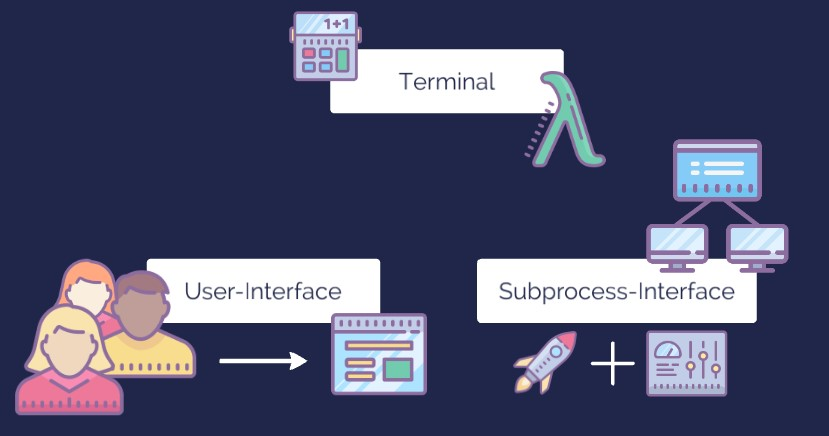
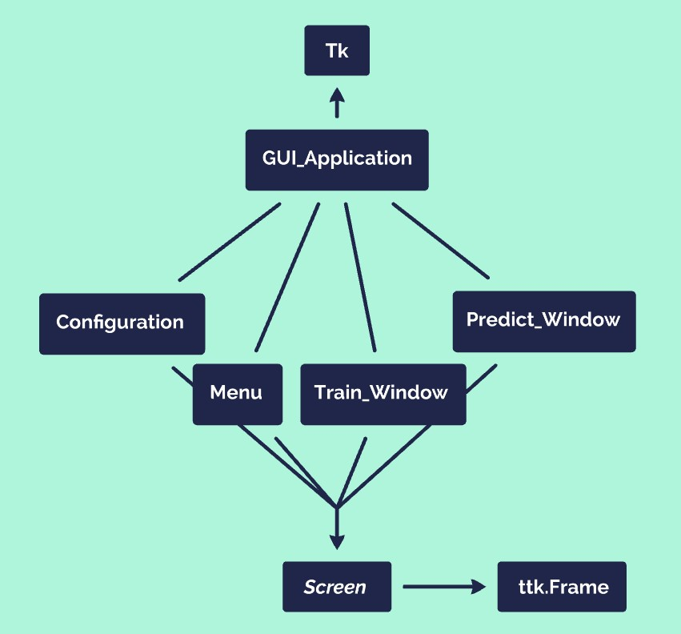
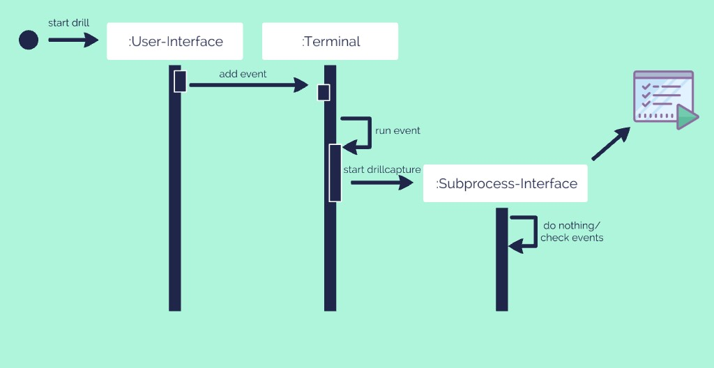

Explanation
(In german)
Live-Application
Unser Programm besteht zur Laufzeit aus 3 großen Komponenten und wurde komplett in Python programmiert. Die GUI (Graphical-User-Interface) nimmt die Wünsche des Users entegen und gibt diese dem Terminal weiter. Das Terminal verarbeitet diese Wünsche, veranlasst das Laden der gesammelten Daten und auch dessen Training und Vorhersage. Das Subprocess-Interface hilft bei dem Starten und kommunizieren mit der Drilldriver und der Drillcapture Datei. Diese beiden Dateien sind für das sammeln und speichern der Bohrdaten von den Sensoren zuständig und wurden nicht von uns programmiert.
{kind=link}
Und jetzt schauen wir uns diese 3 Komponenten etwas im Detail an. Es geht dabei nicht um die Implementierung.
Die GUI
Die GUI wurde in der Python-GUI-Bibliothek Tkinter programmiert. Damit sie modern aussieht, wurden alle Komponent nicht normal implementiert, sondern von ttk. Hier wird das Design von dem Betriebssystem genommen. Als Entwickler hat man dadurch weniger Möglichkeiten, jedoch sehen die Widgets zeitgemäß aus. Außerdem wurde ttkthemes verwendet. Dieses Modul besitzt den Vorteil, dass man einen bestimmten Style wählen kann und alle Widgets sehen so aus. Wir haben uns für einen dunklen Style entschieden, was gut mit Farben kombiniert werden kann.
Bei Tkinter ist es so, dass es einen root gibt. Und jedes Widget muss einen Parent Widget haben (außer der root, dass ist der Startpunkt). Unsere GUI-Anwendung erbt von Tk und ist damit der root. Nun gibt es verschiedene Frames, wie das Startmenu oder der Bohrscreen zum Trainieren. Diese haben den root als Parent und erben selber von Screen, was ein ttk.Frame ist und ein paar wenige Dinge beinhaltet. Jeder Frame hat nun verschiede Children (Buttons, Labels, Textfields, …), welche dann dessen Inhalt sind.
{kind=link}
Und so funktioniert unsere GUI auf abstrakter Ebene. Schau hierfür gerne in wer/src/anoog/automation/graphical_user_interface.py Bevor wir uns das Terminal ansehen, werden wir noch einen Ausschnitt von der GUI betrachten. Um sie einmal gesehen zu haben.
{kind=link}
Links können sich die Benutzer mit den entsprechenden Merkmalen eintragen. Es ist auch schön zu sehen, wie spektakulär der Farbverlauf aus dem Dunkel hervortaucht. Rechts können die Bohrvorgänge / Sensoren gestartet und gestoppt werden. Es können neue Bohrungen hinzugefügt werden und falsche Bohraufnahmen gelöscht werden.
{kind=link}
Bei diesem Screen können nun Testbohrungen durchgeführt werden und der Algorithmus versucht die Bohrung/en einem der Beiden zuzuordnen. Toll dabei ist, dass man hier herum experimentieren kann. Der Algorithmus ist nämlich wählbar. Die Hyperparameter kann man entweder voreingestellt (von uns) lassen oder sie herausfinden lassen (was aber risikoreich sein kann). Ob die Daten hierfür normalisiert werden sollen, kann man ebenfalls entscheiden.
Das Terminal
Das Terminal kümmert sich vor allem um die Logik. Beispielsweise um das Erstellen von den Ordnerstrukturen für das Speichern der Messdaten. Aber das Terminal lädt auch die gespeicherten Daten und lässt diese von einem Machine-Learning-Algorithmus trainioeren und predicten. Hierfür besitzt es ein AI-Model-Object. Dieses kümmert sich um genau um diese Dinge. Es gibt natürlich noch mehr zum Terminal zu sagen, aber alles weitere würde zu sehr ins Detail gehen. Hier gibt es für uns also ertsmal nichts weiter zu sehen und wir gehen zum Subprocess-Interface.
Das Subprocess-Interface
Um die Drilldriver und Drillcapture starten zu können verwenden wir das subprocess-Modul von Python. Hier verwenden wir vor allem das Objekt Popen. Mit dem kann man einen Terminal/Konsole mit einem Befehl starten. Und damit starten wir einmal die Drilldriver und dann noch die Drillcapture. Wichtiger Unterschied ist hier, auf welchem Betriebssystem man sich befindet.
Laufzeit
Nicht unerwähnte sollte man den Code bei Laufzeit lassen. Wir haben 3 Komponenten, welche miteinander interagieren und gleichzeitg laufen müssen. Für uns heißt das, dass alle 3 Kompontenen in Threads laufen. Die Kommunikation währendessen läuft über ein Eventsystem.
{kind=link}
Und wir schauen uns dieses Eventsystem etwas genauer an. Wenn man einem Objekt ein Event schicken möchte, ruft man die add_event()-Methode auf. Nun fügt das Objekt dieses Event in seiner Queue hinzu. Falls das Objekt das Event ausführen möchte, kann es es aus der Queue nehmen. Doch was ist ein Event eigentlich? In diesem Fall einfach nur ein String bzw. ist repräsentiert dieser String einen Schlüssel in einer Hashmap. Und der Wert zu dem der Schlüssel führt ist eine Methode. EventHasmap[eventname] = event_function(). Vorteil hierbei ist, dass eine Hasmap sehr effizient ist. Das Objekt kann also seine Eventqueue prüfen (ob sie leer ist). Falls nicht kann das Objekt das Event als Schlüssel für dessen Hashmap verwenden und führt so die Zielmethode aus. Und das ist das Eventsystem. Hier eine Grafik, bei welcher man dieses Verhalten beobachten kann (zumindest teilweise):
{kind=link}
Es soll ein Bohrvorgang gestartet werden. Der User drückt also einen Button, was den aufruf von add_event() beim Terminal nachsichzieht. Das Event was in der Queue vom Terminal gespeichert wird heißt beispielsweise ‘start_drill’. In der Hashmap gibt es zu diesem Schlüssel eine passende Funktion start_drill(), welche mit dem Event beim nächsten Mal Prüfen der Eventqueue aufgerufen wird. Und was dann folgt ist für das Eventsystem nicht relevant.
Im Folgenden kannst du dir die Implementierung ansehen. So kannman es vielleicht besser verstehen. Außerdem ist der Code Unabhängig von einem Sachverhalt und damit gut auf andere Probleme übertragbar.
Komponenten eines Eventsystem-Teilnehmers:
Event-Queue (zum Sammeln der Events)
self.events = Queue()
Event-Hashmap (zum Ausführen der Events)
self.EVENT = {'event1':self.func_for_event1, 'event2':self.func_for_event2}
Eine Methode, um ein Event ausführen zu können
if not self.events.empty(): event = self.events.get() # event = 'eventname' or event = 'eventname', *args if len(event) > 1: self.EVENT[event[0]](\*event[1]) else: self.EVENT[event[0]]()
Eine Methode, damit Andere ein Event hinzufügen können
def add_event(self, event_name, \*additions): event = (event_name, \*additions) self.events.put(event)
AI-Model-Selection
Wir haben einige Machine-Learning Algorithmen unter realen bedingungen, sprich nur 6 Trainingsdaten, evaluiert.
Die Accuracy der Algorithmen liegt sehr nah beinander und nur Naive Bayes ist eindeutig ungenauer. Und damit ist die Modelauswahl auch schon zuende, da man nun frei wählen kann.
Hint
Die Hyperparameter wurden seperat angepasst.
{kind=link}
Timerow
Eine große Herausforderung war bei uns mit der Zeitreihe umzugehen. Welche etwa so aussieht:
{kind=link}
Gelöst wurde dies mit der manuellen Feature-Extraction. Hierbei entnimmt man der Zeitreihe Eigenschaften, wie statische Werte. Die Classifier können nun mit diesen neuen Features ganz normal arbeiten.
{kind=link}